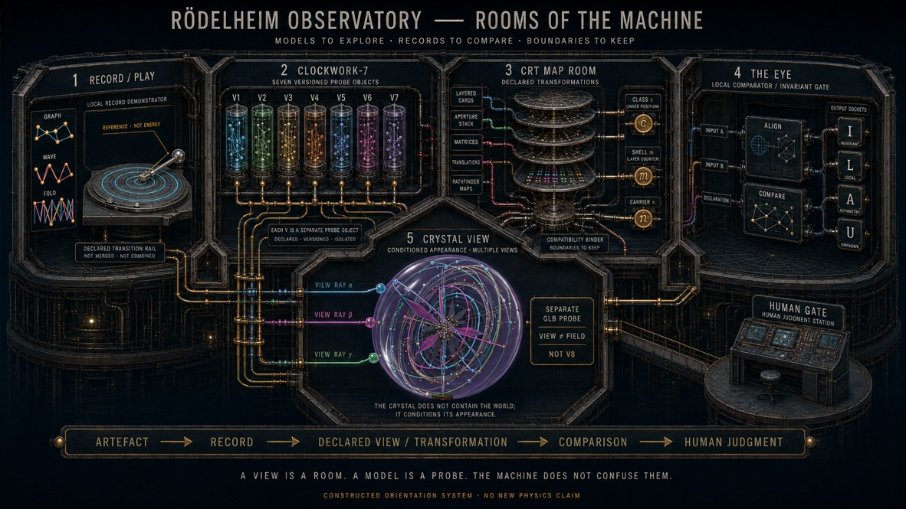

Return
Was können wir nach allen Schnitten verantwortlich zurückgeben?
compare → ledger → returnDasselbe Objekt kann geordnet, bewegt, projiziert, verglichen und entschieden werden. Was sich dabei ändert, wird nicht weginterpretiert — sondern sichtbar protokolliert.
Jeder Pfeil ist eine deklarierte Handlung. Kein Pfeil behauptet, dass Record, Ansicht oder Entscheidung mit dem Carrier identisch sind.
Wähle eine Ansicht. Der obere Record bleibt derselbe adressierte Carrier; darunter erscheint nur das, was die gewählte Abbildung produziert.
Wie wird eine Form zu einem lesbaren Record?
line → phase → readout02Was ist der Punkt — und was nur seine Lage?
carrier ≠ coordinate03Welche Ursprünge teilen denselben sichtbaren Wert?
fiber + side key04Welche Beziehungen erzeugt die gewählte Topologie?
N(x) + boundary05Welche Bahn entsteht durch Wiederholung?
xₜ₊₁ = T(xₜ)06Was bewahrt die Ansicht — und welche Adresse verliert sie?
view + loss + return07Welche Antwort erlaubt der vollständige Record?
PASS · FAIL · ABSTAIN · STOPWas können wir nach allen Schnitten verantwortlich zurückgeben?
compare → ledger → returnILAU erklärt nicht, warum etwas geschieht. Es hält fest, was ein deklarierter Repräsentationswechsel mit dem Record macht.
Was bleibt erhalten oder wird als Invariant-Kandidat tatsächlich geprüft?
Welche zuvor vorhandene Information ist im neuen Record nicht mehr enthalten?
Was führt die Ansicht selbst ein — Raster, Schwelle, Farbe, Basis oder Key?
Welche Alternativen können aus dem verfügbaren Record nicht entschieden werden?
Boundary: Ein universelles U → HOLD ist nicht etabliert. Eine Entscheidung folgt nur aus einer zusätzlich deklarierten lokalen Regel mit benanntem Geltungsbereich.
Ledger für retained/invariant, lost, added/introduced und unresolved content — geeignet für provenance-aware comparison, nicht als kausale Erklärung.
Glossary öffnen →Die vier Klassen sind erhalten; universelles U → HOLD wird ausdrücklich verworfen. Lokale Regeln müssen separat typisiert werden.
Der Lab-Master fasst state → operator → cut → ILAU → residual → return zusammen. Die Buchkopie bleibt byte-identisch zum inventarisierten HTML; sie ist Instrumentdarstellung, kein wissenschaftlicher Beweis.
Die Räume ordnen verschiedene Instrumente, ohne sie zu einem einzigen Mechanismus zu verschmelzen. Nach acht Kapiteln wird das Bild zur Karte des zurückgelegten Weges — und zur Tür in das Science Lab.

Rödelheim Observatory · Rooms of the Machine
Artefakt → Record → deklarierte Ansicht oder Transformation → Vergleich → menschliches Urteil.
Konstruiertes Orientierungssystem · Schlusskarte des Buchwegs · keine neue Physik und keine Zusammenführung nicht-identischer Modelle
Return heißt nicht: zum Anfang zurückkehren, als wäre nichts geschehen. Return heißt: sichtbar zurückgeben, was nach dem Weg verantwortbar bleibt.